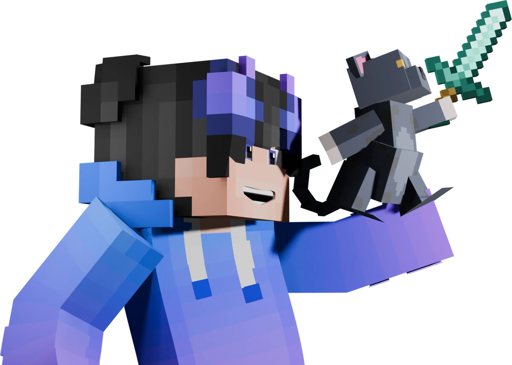

Creamos mods de Minecraft y eventos donde los streamers que van empezando pueden brillar.

Quiénes somos
Axol Studio es un equipo pequeño que vive dentro de Minecraft. Diseñamos mundos, programamos mods propios y armamos series donde varios creadores comparten una misma historia.
Nuestro enfoque son los streamers pequeños: les damos un escenario cuidado, con mecánicas nuevas y eventos en vivo, para que su comunidad tenga algo especial que ver y ellos un lugar donde crecer.
- Series y eventos para streamers de cualquier tamaño
- Mods propios hechos para cada historia
- Un launcher que instala y actualiza todo con un clic
Proyectos
Fantasía oscura medieval: clases, dragones, mazmorras vivas y jefes que se invocan con rituales.
Donde todo empezóVoragos 1
La primera historia del reino, contada capítulo a capítulo.
Mods
Cada serie trae mecánicas propias que programamos para ella.
Hecho por gusto, sostenido por la comunidad
No cobramos por participar ni por los mods. Si te gusta lo que hacemos, un aporte nos ayuda a pagar el servidor y seguir creando.